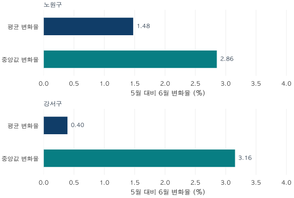

통계의 함정 · 4 / 4
우리 동네 10% 상승? 변화율과 대시보드 용어 읽는 법
동네 10% 상승을 내 집의 상승으로 읽어도 될까요? 평균·중앙값 변화율, 통계 설계와 표준화, 대시보드 용어와 기사 확인 질문을 정리합니다.
분석 기간 · 2026년 5~6월 계약 · 선택 평형군 | 보유 자료 스냅샷 생성 · 2026-10-04
“우리 동네 아파트값이 1년 동안 10% 올랐다.” 이 말을 듣고 내 아파트 가격에도 1.1을 곱하고 싶어집니다. 하지만 그 10%가 무엇의 변화율인지 모르면 아직 계산을 시작할 수 없습니다. 마지막 강의에서는 앞의 세 강의에서 익힌 분모와 가중치를 시간축에 올려놓습니다.
1. 10% 상승의 주어를 찾아야 합니다
변화율 = (비교 시점 값 ÷ 기준 시점 값 − 1) × 100
기준값이 0이면 이 비율은 정의되지 않습니다. 가격 수준과 변화율의 단위도 다릅니다.
평균가격 10억 원이 11억 원이 되면 평균 변화율은 10%입니다. 중앙값 8억 원이 8.8억 원이 되면 중앙값 변화율도 10%입니다. 각각 금액 합계와 가운데 순서에 관한 설명이지, 모든 아파트가 똑같이 10% 올랐다는 진술은 아닙니다. 평균 변화율은 개별 주택 상승률의 단순 평균과도 일반적으로 다릅니다.
첫해 거래가 5, 10, 15억 원이고 다음 해가 5, 10, 18억 원이면 평균은 10억→11억 원으로 10% 오릅니다. 중앙값은 10억 원으로 그대로입니다. 같은 세 집의 가격이라고 강하게 가정해도 상승률은 0%, 0%, 20%로 제각각이며 단순 평균 상승률은 약 6.67%입니다. 실제 서로 다른 집이 거래된 두 기간에는 개별 집의 변화라는 해석이 더 어려워집니다.
반대로 두 번째 해가 4, 11, 15억 원이면 평균은 10억 원으로 그대로인데 중앙값은 10억→11억 원으로 10% 오릅니다. 평균과 중앙값은 서로 다른 변화를 포착합니다.
‘연간’의 시간 정의도 확인해야 합니다. 12월 값의 전년 12월 대비 변화, 1년치 전체 거래 평균의 전년 대비 변화, 월별 평균 12개를 같은 비중으로 평균한 값의 변화는 서로 다릅니다. 거래 건수가 매달 다르면 뒤의 두 연평균부터 달라집니다. 두 달의 움직임을 관측했다고 1년 상승률이 관측된 것도 아닙니다.
2. 같은 자료에서 평균과 중앙값은 얼마나 다르게 움직였나?
이번 실제 사례는 연간이 아니라 2026년 5월 대비 6월입니다. 앞선 강의와 같은 두 전용 평형군만 비교하고, 각 통계의 반올림 전 금액으로 변화율을 계산했습니다.
| 지역 | 거래 건수 | 평균 변화율 | 중앙값 변화율 |
|---|---|---|---|
| 노원구 | 368 → 301 | +1.48% | +2.86% |
| 강서구 | 280 → 188 | +0.40% | +3.16% |

실제 집계 · 두 패널 축 범위 동일 · seaborn · 표본 불확실성이나 인과효과의 추정치는 아닙니다.
평균 변화율을 비교하면 노원구가 더 높고, 중앙값 변화율을 비교하면 강서구가 더 높습니다. 지표를 바꾸자 두 지역의 순서까지 달라집니다. 어느 쪽이 ‘진짜 집값 상승률’인지 이 표만으로 판정할 수는 없습니다. 각각의 통계가 답하는 질문을 먼저 선택해야 합니다.
노원구에서는 큰 평형군의 거래 비중이 약 41.3%에서 47.2%로 늘었습니다. 기존 글의 구성비 분해에 따르면 평균 변화 약 +1,103만 원은 면적군 내 항 약 −37만 원과 구성비 항 약 +1,140만 원으로 나뉩니다. 같은 집값이 전혀 오르지 않았다는 증명은 아닙니다. 평형군 내부에서도 거래 단지·층·연식 구성이 달라지기 때문입니다. 이 분해는 산술적 설명이며 인과효과 추정이 아닙니다.
3. 통계 설계는 그래프를 그리기 전에 시작합니다
표준화는 비교하려는 질문에 맞춰 달라져서는 안 될 조건을 정하는 일입니다. 면적당 가격으로 나누기, 평형군 비중 고정, 같은 대상의 두 시점 비교, 모형으로 조건 보정은 서로 다른 작업입니다. 어느 한 단계만으로 모든 구성이 같아지지는 않습니다.
- 대상을 정합니다. 거래를 요약할지, 현재 보유 재고를 평가할지, 특정 조건의 주택가격 변화를 추정할지 적습니다.
- 한 행의 단위를 정합니다. 거래 한 건, 단지×전용 평형, 단지×주, 지역×월 중 무엇인지 명시합니다. 같은 세대수나 거래를 중복 합산하지 않습니다.
- 시간과 포함 규칙을 고정합니다. 계약월·기준일·정보 시점을 구분하고 취소, 직거래, 미확인 상태, 토지임대부의 처리 규칙을 맞춥니다.
- 단위와 가중치를 정합니다. 만원과 억원, 전용면적과 공급면적, 거래 건수와 세대수와 면적을 섞지 않습니다. 비율은 분자·분모의 대상도 같아야 합니다.
- 비교 가능한 대상을 확보합니다. 두 날짜에 모두 값이 있는 대상의 교집합을 쓰거나, 기준 기간의 구성을 고정하는 방법을 명시합니다. 빠진 대상과 적용 범위도 보고합니다.
- 검산과 민감도 확인을 합니다. 건수 가중 평균이 전체 평균과 맞는지, 하위 합계가 상위 합계와 맞는지 확인합니다. 기간·포함 기준·가중치를 바꾸었을 때 결론이 얼마나 달라지는지 봅니다.
세대수 가중에서도 두 시점마다 관측 가능한 재고가 다르면 구성 변화가 남습니다. 프로젝트의 지역 자산 변화는 두 끝점에서 가격과 가중치가 모두 있는 같은 구성요소를 맞춘 공통 대상 변화율을 별도로 봅니다. 단순히 그때그때 계산 가능한 합산액을 비교하면 새로 가격이 연결된 재고 때문에 총액이 커질 수 있습니다.
같은 주택의 반복 거래나 특성을 보정한 모형은 비교 조건을 더 맞추는 방법입니다. 그래도 수리·상태 변화, 선택된 표본, 모형 오차가 남습니다. 같은 단지·면적·층 묶음을 다시 관측했다고 실제 같은 호수의 주택이 두 번 팔린 것까지 확인한 것은 아닙니다. 추정가격을 실제 체결가로 바꿔 부르지 않아야 합니다.
4. 대시보드의 말을 일상어로 번역하기
아래 용어는 숫자가 무엇을 뜻하는지 확인하는 도구입니다. 영문 이름을 외우기보다 오른쪽의 질문과 함께 읽어보세요. 코드 표기는 이 프로젝트에서 쓰는 변수 또는 개념을 연결하기 위한 것입니다.
| 용어 | 뜻 | 활용할 질문·예시 |
|---|---|---|
| 모집단·관측 표본 Population / sample | 말하려는 전체 대상과 실제로 관측한 대상 | 구 전체 재고인가, 선택한 두 평형군의 거래인가? 신고 거래 전체를 읽어도 모든 주택의 임의표본은 아닙니다. |
| 집계 단위 Grain | 한 행이 대표하는 단위 | complex_id×unit_type×주별 행을 단지 하나로 잘못 세지 않았나? |
| 셀 Cell | 선택한 조건들의 교차 묶음 | 이 글의 지역×계약월×평형군처럼, 셀마다 거래 건수 n을 확인합니다. 모든 화면의 셀이 같은 단위는 아닙니다. |
| 평균·중앙값 Mean / median | 금액의 산술평균과 순서의 가운데 | 금액 합계를 설명하는가, 가운데 거래를 찾는가? 중앙값도 구성의 영향을 받습니다. |
| 가중치·분모 Weight / denominator | 누구에게 얼마나 큰 비중을 주는지 | 거래 건수 n인가, 세대수 area_households인가, 전용면적인가? |
| 표본 수·거래량 Support / count | 숫자를 뒷받침하는 관측 수 | 평균이 같은 두 셀이라도 1건과 100건의 근거는 다릅니다. 건수가 많다고 선택 편향이 사라지지는 않습니다. |
| 커버리지 Coverage | 정한 전체 중 계산에 포함된 몫 | 단지 수 80%인가, 세대수 80%인가? 세대수를 모르는 단지는 숫자 분모 밖에 따로 표시합니다. |
| 결측·거래 없음 Missing / no observation | 값을 확인하지 못했거나 해당 기간 관측이 없는 상태 | 가격 0원으로 입력하지 않습니다. ‘거래 없음’과 ‘가격 하락 없음’은 다릅니다. |
| 관측·추정 Observed / estimated | 실제 계약 기록과 모형 계산값 | price_manwon인가, benchmark_amount인가? 예상 체결을 보장하지 않습니다. |
| 기준일·정보 시점 Reference date / information cutoff | 평가하는 날짜와 반영한 정보의 한계 시점 | 6월 가격을 10월 자료로 재계산했다면 6월 당시 예측 성과라고 부를 수 없습니다. |
| 자료 버전·잠정치 Vintage / provisional | 어느 자료 스냅샷으로 계산했는지, 추가 신고·정정이 예상되는 상태인지 | 계약월 ym과 스냅샷 생성일을 함께 남깁니다. 달이 끝났어도 수정될 수 있습니다. |
| 전용 평형·평형군 UnitType / comparison group | 전용면적을 정수 평형으로 묶고, 필요한 평형을 다시 묶은 구분 | 17·18평형은 공급 18평이나 정확히 59㎡만을 뜻하지 않습니다. |
| 이월·오래된 관측 Carry-forward / staleness | 과거 관측값을 뒤 시점에 유지하거나 오래된 근거를 쓰는 상태 | 마지막 거래일과 경과기간을 확인합니다. 이월값은 새 거래가 아닙니다. |
| 공통 대상 Common support / matched cohort | 두 시점에 모두 비교 가능한 같은 대상 집합 | 신규로 가격이 연결된 단지가 상승률을 바꾸지 않았나? 실제 동일 주택 확인과는 별개입니다. |
| 구성 변화 Composition / mix effect | 거래된 주택 유형의 비중이 달라지는 현상 | 평균이 오른 달에 큰 평형 거래 비중도 늘었나? |
| 가격 수준·지수 Level / index | 원 단위 가격과 기준시점을 100 등으로 놓은 상대 척도 | 지수 110은 110억 원이 아닙니다. 같은 방법의 기준값 100 대비 10%라는 뜻입니다. |
| 전월비·전년동월비 MoM / YoY | 이전 달 또는 전년 같은 달 대비 변화 | ‘연간 10%’의 비교 날짜를 확인합니다. 연평균 대비인지도 구분합니다. |
| 퍼센트·퍼센트포인트 % / percentage point | 상대 변화와 비율 두 개의 차이 | 비중 20%→30%는 +10%p이고 상대적으로 +50%입니다. |
| 분위수·사분위범위 Quantile / IQR | 정렬한 분포의 위치, 75백분위−25백분위 | 중앙 50%의 퍼짐을 볼 때 씁니다. 평균·중앙값만 있는 표에서 IQR을 복원할 수 없습니다. |
| 불확실성·신뢰구간 Uncertainty / confidence interval | 명시한 추정 절차와 가정에 따른 오차의 표현 | 거래가격의 분포 범위와 평균 추정의 신뢰구간은 다릅니다. 모형 품질 점수도 확률로 자동 해석할 수 없습니다. |
| 전세가율 Jeonse-to-sale ratio | 비교 가능한 전세보증금÷매매가격 | 대상·시점을 맞췄나? 세대별 비율의 가중 평균과 합산 보증금÷합산 매매금액은 다릅니다. |
| 추정 주택자산 총액 Estimated housing asset value | 호환되는 면적별 추정가격×세대수의 합 | 기간 거래대금이나 실제 지불한 월세 총액과 혼동하지 않습니다. 가격 확인 재고의 범위를 봅니다. |
5. 신문기사의 숫자 옆에 여섯 가지를 적어보세요
- 주어: 어느 지역·주택·평형의 거래 또는 재고인가?
- 시간: 어느 날짜끼리 비교했고, 어느 시점까지의 자료인가?
- 통계: 평균·중앙값·지수·모형 추정 중 무엇이며 단위는 무엇인가?
- 분모: 거래·단지·세대·면적 중 무엇에 가중치를 주었나?
- 근거: 건수·커버리지·제외 조건이 공개되어 있고 구성은 얼마나 달라졌나?
- 해석: 요약값의 변화에서 특정 집의 상승이나 정책의 인과효과로 건너뛰고 있지 않은가?
‘통계적’과 ‘통계적으로 유의하다’도 다릅니다. 후자는 특정 검정과 가정 아래의 판단이며, 효과가 크거나 실용적으로 중요하거나 원인이 입증됐다는 뜻은 아닙니다. 이 시리즈는 집계 산술과 기술통계를 설명했으며 유의성 검정을 수행하지 않았습니다.
마지막 연습 · 기사 문장을 정확하게 다시 쓰기
“노원구 집값이 1.48% 올랐다”를 이 자료에 맞게 고치면 다음과 같습니다. “2026년 10월 4일 생성한 보유 자료에서, 노원구의 전용 17·18평형과 25·26평형 중 정제 조건을 통과한 매매의 평균 거래금액은 2026년 5월 대비 6월 약 1.48% 높았다. 거래 건수는 368건에서 301건으로 달라졌으며, 동일 주택의 가격 상승률을 뜻하지 않는다.”
통계를 잘 읽는 사람은 큰 숫자를 보고 곧바로 믿거나 거부하지 않습니다. 그 숫자가 정확히 어느 질문에 답했는지 확인합니다. 평균과 중앙값, 거래와 재고, 수준과 변화율을 구분하면 기사와 대시보드의 문장을 스스로 점검할 수 있습니다.
분석 방법·출처·재현 자료
실제 집계의 범위
국토교통부 아파트 매매 실거래가 상세 자료 중 노원구·강서구, 2026년 5~6월 계약, 전용 17·18평형과 25·26평형을 사용했습니다. 전용면적㎡를 3.3058로 나누고 0.5 이상을 올린 정수 평형을 묶습니다. 두 평형군 외 거래는 포함하지 않습니다. 식별된 취소·직거래, 토지임대부와 정제상 부적격 관측은 제외합니다. 미확인 상태를 모두 확인했다는 뜻은 아닙니다.
2026년 9월 계약분까지 보유한 자료로 10월 4일 생성한 스냅샷을 재사용했습니다. 원래 정보 입수 시점은 복원하지 못했으며 이후 신고·정정에 따라 값은 달라질 수 있습니다. 두 지역은 비교 방법을 설명하기 위해 선택한 사례이고 전국을 대표하는 표본이 아닙니다.
검증과 그림
지역×월×평형군 8개 셀과 두 평형군 합산 4개 셀의 건수·평균·중앙값을 조회 관측과 정제 거래에서 각각 계산해 대조했습니다. 모든 공개 셀은 10건 이상이며, 이는 공개 최소 건수 조건이지 정확도를 보증하는 임계값이 아닙니다. 전체 중앙값은 개별 거래를 합쳐 계산한 값입니다. 변화율과 가중 평균은 반올림 전 값으로 계산합니다.
그래프는 검증된 공개 집계와 명시된 가상 예시만으로 seaborn에서 작성했습니다. 집계값에 임의로 거래 분포나 신뢰구간을 덧붙이지 않았습니다. 실제 집계와 모집단 정의 내려받기 (JSON). 그림의 가상 재고 예시는 실제 단지나 지역을 나타내지 않습니다.
개념의 근거
평균·중앙값의 일반 정의는 NIST 통계 핸드북의 위치 통계량 설명을 참고할 수 있습니다. 세대수·면적 가중과 지역 총액은 파파펭귄 프로젝트의 재고 집계 정의를 따르며, 수식과 포함 범위는 본문에 공개했습니다. 외부 기관의 가격지수를 재현한 글은 아닙니다.
분석·집필: 파파펭귄 (Nobot Kang). 에이전트를 활용해 계산 검증, 초안과 그림을 작성했습니다. 개별 거래나 단지 식별자는 공개하지 않습니다. 공공데이터포털은 원자료의 이용허락범위를 제한 없음으로 안내합니다(2026-10-08 확인). 글·그림의 이용 조건과 원자료 조건은 별개입니다.